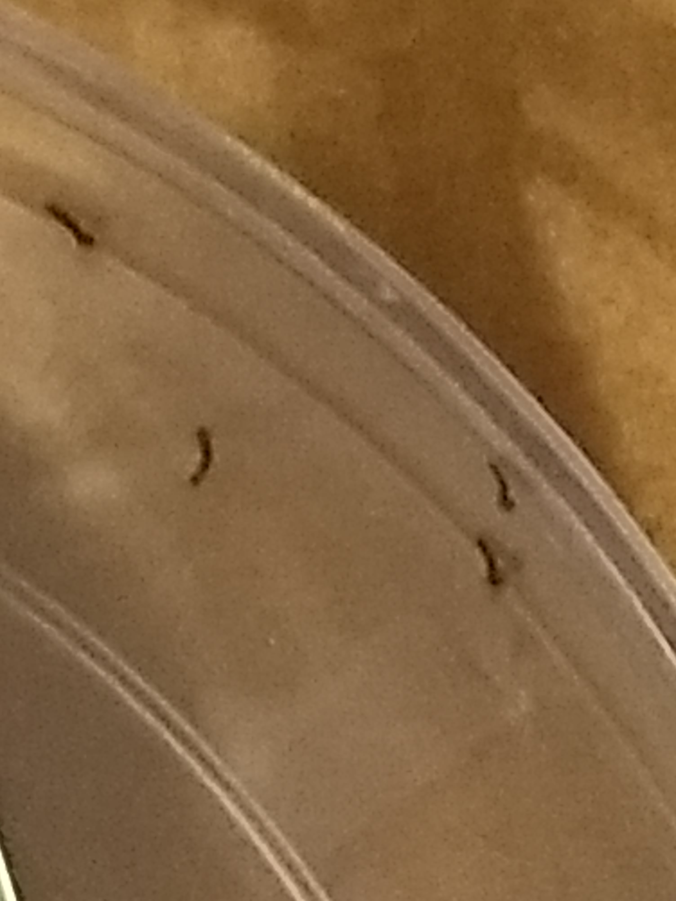
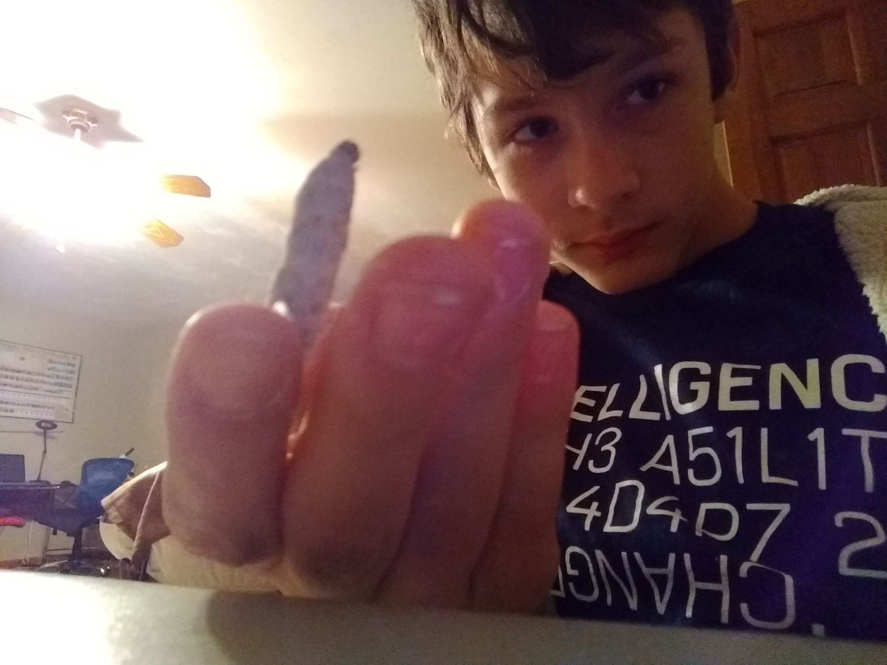

The picture on the left shows me feeding the silk worms, and on the right there is a picture of the silk worms about a day after hatching.

This picture shows a silk worm after a bit less than a month, and it is basicaly ready to become a pupa and spin its own cacoon

This is a picture of a silkworm that has spun their own silk cocoon
Contact info:
Phone Number: 1-331-245-6525
Email: Personal: torinws@yahoo.com
Youtube: titonictitan@gmail.com
Business: torin@msctek.com